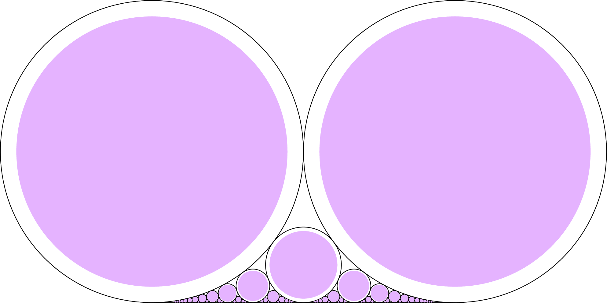
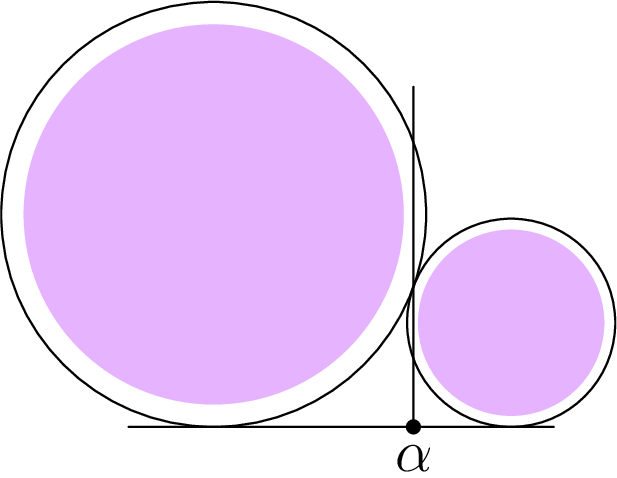
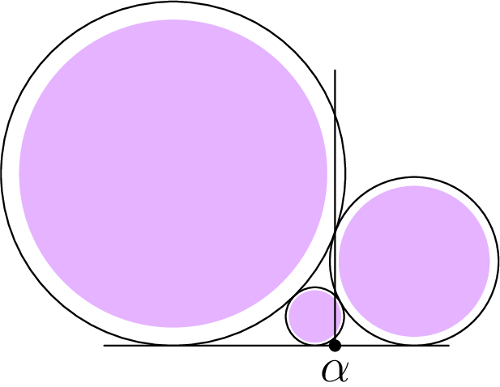

December 26th
Today I learned the refinement to Dirichlet's approximation theorem, from Ford circles. Namely, we want to show that for irrational $\alpha,$ there exist infinitely many $a/b$ such that\[\left|\alpha-\frac ab\right|{\lt}\frac1{\sqrt 5b^2}.\]Very quickly, this is sharp, achieved at $\varphi,$ which we outline. We can show (inductively, say) that the continued fraction convergents are $\frac{F_{n+1}}{F_n},$ and the corresponding error is\[F_n^2\left|\varphi-\frac{F_{n+1}}{F_n}\right|=\frac1{\sqrt5}\left|1+(-1)^{n+1}\left(\frac{1-\sqrt5}2\right)^{2n}\right|\]using something like Binet's formula. As $n\to\infty,$ this approaches $\frac1{\sqrt5},$ and because continued fraction convergents are best possible, this $\frac1{\sqrt5}$ is best possible.
Now for the Ford's circle. What I liked about the Ford circles is that we can very visually see the $\frac1{2b^2}$ error term, so we can also see the $\frac1{\sqrt 5b^2}$ by changing the radius accordingly. Here's what that looks like.
We want to show that every irrational $\alpha$ is under infinitely many of the purple circles. This doesn't look surprising, though somewhat frustrating to prove. From the Ford circles proof from yesterday, we know $\alpha$ is below an infinite decreasing sequence of tangent circles with the norm $\frac1{2b^2}.$ The difficulty is if $\alpha$ lives on the outer edges of our circles.
The key observation is that in this situation, the next circle down is guaranteed to hit bullseye.
Let's formalize this; it's a bit subtler than it appears. Consider the decreasing sequence of Ford circles over $\alpha$ we constructed yesterday. Note that this is in fact unique. The continued fraction bound says that $|\alpha-a/b|{\lt}1/\left(2b^2\right)$ is $a/b$ a continued fraction convergent, so the Ford circles can be computed from convergents of $\alpha.$
As suggested, we show that it is impossible for three consecutive Ford circles over $\alpha$ to satisfy\[\left|\alpha-\frac ab\right|\ge\frac1{\sqrt 5b^2}.\]In particular, we show that if $\frac ab$ and $\frac cd$ are tangent ($b{\lt}d$) and satisfy the above equality, then their mediant has\[\left|\alpha-\frac{a+c}{b+d}\right|{\lt}\frac1{\sqrt5(b+d)^2}.\]Again, this is motivated by the visual: if $\alpha$ is not shadowed by two consecutive purple circles, then the mediant's purple circle covers. We note that, in this case, $\frac{a+c}{b+d}$ satisfies the continued fraction bound, so it belonged on our sequence of Ford circles. Namely, we won't have to worry about deviating off of our Ford circle sequence. Anyways, this will be enough to finish the proof.
To minimize headaches, we say without loss of generality $\frac ab{\lt}\alpha{\lt}\frac cd.$ We note a suitable affine transformation can send the circle at $\frac ab$ to the circle at $\frac01.$ This transformation sends $\frac cd$ to some rational $q\in(0,1)$ and $\alpha$ to some other irrational between $0$ and $q.$ Using the tangency argument from yesterday as an algebraic result, we note that $q=\frac{1}{1/q}$ will satisfy\[0\cdot\frac1q-1\cdot1=-1,\]so providing the circle above $q$ with radius $\frac1{2(1/q)^2}=q^2/2$ will maintain the tangency. This tangency defines the radius, so this must be the radius after the affine transformation. The mediant then gets sent to\[\frac{0+1}{1+1/q}=\frac q{q+1}\]using the same tangency argument fixing the mediant's circle. The Ford circle's radius is $1/\left(2(1+1/q)^2\right),$ which is $q^2/\left(2(1+q)^2\right).$
Now we start closing the argument. We shrink all radii from a factor of $1/2$ to a factor of $1/\sqrt5,$ giving the following.
- The circle above $0$ now covers the interval $(-1/\sqrt5,1/\sqrt5).$
- The circle over $q$ covers the interval $\left(q-\frac{q^2}{\sqrt5},q+\frac{q^2}{\sqrt5}\right).$
- The circle over $\frac q{q+1}$ covers the interval $\left(\frac q{q+1}-\frac{q^2}{\sqrt5(q+1)^2},\frac q{q+1}+\frac{q^2}{\sqrt5(q+1)^2}\right).$
Our goal is to show that $\alpha$ is not covered by the first two intervals, then it's covered by the third. On one hand, $q\in(0,1)$ always implies that\[\frac q{q+1}-\frac{q^2}{\sqrt5(q+1)^2}{\lt}\frac1{\sqrt5}.\tag{1}\]On the other hand, we will see $\frac1{\sqrt5}{\lt}q-\frac{q^{2}}{\sqrt{5}}$—true because $\alpha$ is between the intervals of $0$ and $q,$ and equality is impossible for rational $q$—implies\[\frac q{q+1}+\frac{q^2}{\sqrt5(q+1)^2}{\gt}q-\frac{q^2}{\sqrt5}.\tag{2}\]The union of (1) and (2) will tell us that the interval of the mediant covers the empty space between the intervals of $0$ and $q.$
I guess I'll show the details here, half out of boredom and half out of punishment for myself. Clearing denominators shows (1) is equivalent to\[q(q+1)\sqrt5-q^2{\lt}(q+1)^2.\]This expands to\[q^{2}\left(\sqrt{5}-2\right)+q\left(\sqrt{5}-2\right){\lt}1.\]The right-hand side is a quadratic with $+\infty$ end behavior, so it'll dip below $y=1$ axis for a single contiguous interval. The fact that the inequality holds for $q=0$ ($0{\lt}1$) and $q=1$ ($2\sqrt5-4{\lt}1$) implies that $(0,1)$ must be included in this dip below $y=1.$ The inequality follows.
Clearing denominators and cancelling a $q$ in (2) turns it into\[(q+1)\sqrt5+q{\gt}(q+1)^2\sqrt5-q(q+1)^2.\]Noting $(q+1)^2-(q+1)=q(q+1)$ let us cancel an additional $q,$ making this\[1{\gt}(q+1)\sqrt5-(q+1)^2,\]or $q^2+(2-\sqrt5)q+(2-\sqrt5){\gt}0.$ This is a quadratic with the correct end behavior and a root at $\frac{-1+\sqrt5}2.$ Because $2-\sqrt5{\lt}0,$ the other root is negative, so for our $q\in(0,1),$ our inequality will hold provided\[q{\gt}\frac{-1+\sqrt5}2.\]Note this is actually our "equality'' case at $\varphi.$ Anyways, the hypothesis is that $q^2-q\sqrt5+1{\lt}0.$ This is a quadratic with roots at $\frac{\pm1+\sqrt5}2,$ so the hypothesis holds if and only if $q$ lives between $\frac{-1+\sqrt5}2$ and $\frac{1+\sqrt5}2.$ In particular, $q{\gt}\frac{-1+\sqrt5}2,$ so we're done.